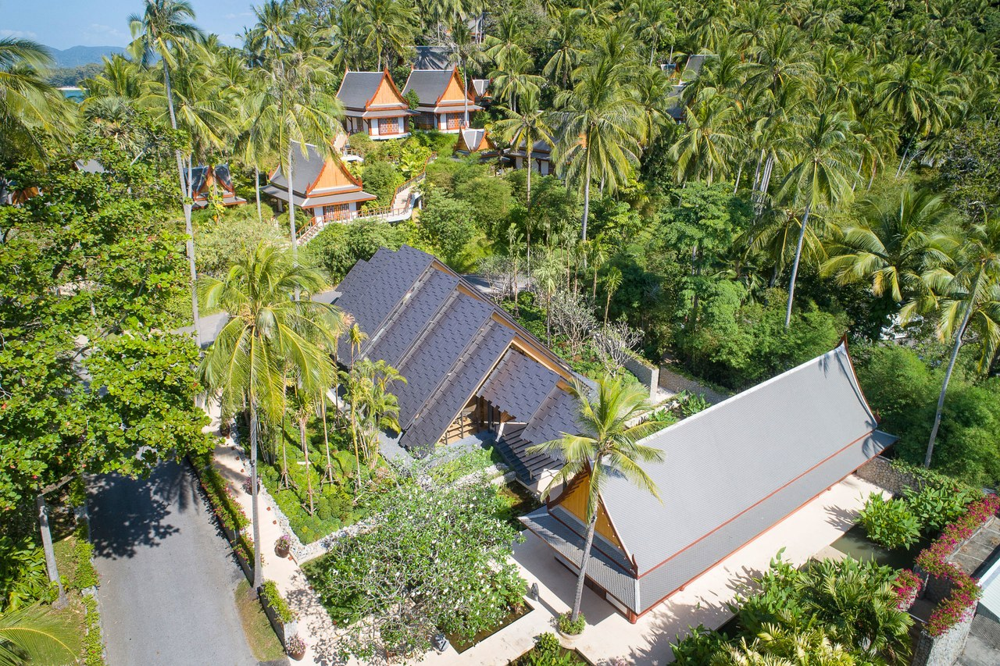
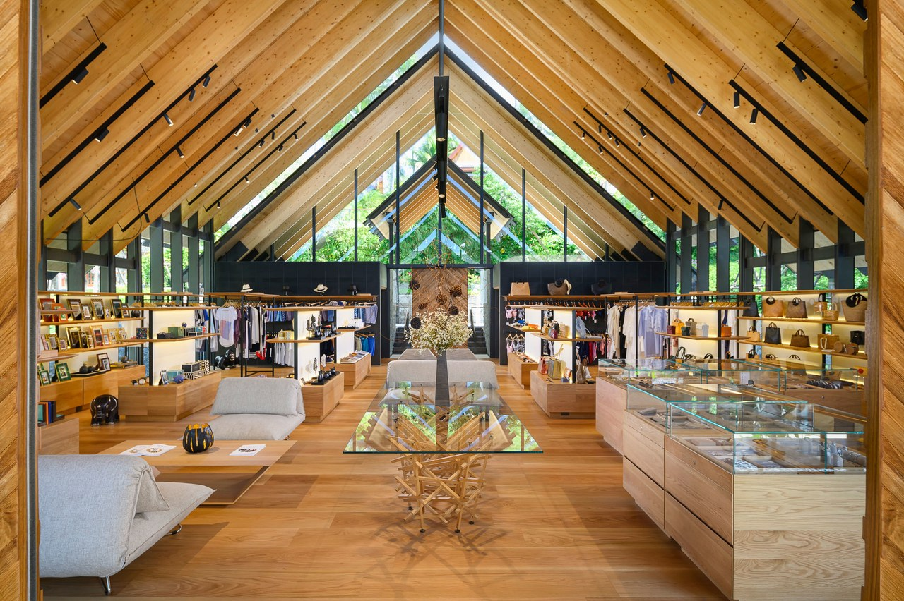

#03
Inside
Kengo Kuma's
stunning
New project
In Phuket,
Thailand
Thirty-one years ago when the Ed Tuttle–designed Phuket resort Amanpuri opened, it was with supreme reverence for nature and environment. Because that ethos is still driving the brand’s every move—now spanning 32 resorts in 21 countries—its recent collaborations with Japanese architect Kengo Kuma seem a completely natural fit. He is the one who said, after all, that “architecture is a frame for nature.” This month, the property unveils its highly curated new shopping concept, the Kuma-designed Retail Pavilion.
“Something
that is very
strong about
our practice
is that we
tend to
really honor
direct links
with the
outside,”
says the star architect behind Tokyo’s new timber Olympic stadium. Adds Kengo Kuma & Associates studio director Balazs Bognar, “The site at Amanpuri especially lays bare so many beautiful elements: water, land, air, light, and manifested in such a highly memorable impact. Our site is lushly vegetated, and our team’s approach was to put the place first. Architecture is secondary, and acts as a frame or connection between people and our surroundings.”
Kuma is most proud of the Retail Pavilion because, after collaborations with the landscape architect on flora that would mirror some of the vertical lines, “it fits.” Photo: Courtesy of Aman Resorts
Approaching the pavilion’s floor-to-ceiling glass front, bamboos and coconut palms echo its verticals, "abstracted to a bar code in a lot of ways,” according to Kuma, who points out it’s not high-tech or flashy but required plenty of engineering and structural work to appear so simple. The design and build took just more than 12 months. “There was a big hint about wanting to have some complementary language with the existing roofs,” says Kuma of the steeply pitched Thai-inspired structures with a leitmotif of repeated rhythms that informed his airy timber-accoutered structure, topped with large textured aluminum tiles. Repeated floating gables create a telescoped vision sans columns that has a more transparent rendition than traditional systems. “I think probably the proudest point is that it fits,” says Kuma. “The roofs feel like they are settled in: They are connecting with the villas on the top of the hill.”
It is, says Bognar, “a subtle choreography, but one that hopefully places emphasis on Aman’s carefully selected goods on display.” Some of those are Lotus Arts de Vivre’s mythology-inflected jewelry, Alexander Lamont’s parchment boxes, and limited edition pieces by Kuma, subtly arranged within different retail spaces around a central lounge where guests may sip tea. Kuma’s contribution is a run of 10 engraved and signed specially crafted tables, a collaboration with Germany’s Eins zu Eins. “This is a meditation on the capacity of wood, the hand of human technique in an age-old material,” says Bognar. “The composition is almost like a wood cloud or architectural lattice—an art piece for discerning dining rooms.”
Clerestories in the roof ensure that not only light but also nature infuses the lofty space, with the view outward comprising plenty of green. The prolific use of timber inside also drives home a supreme relationship with the natural world. Photo: Courtesy of Aman Resorts
“Connection
to nature
is a
fundamentally
human
experience,
and this is
strongly
evident
in both the
approach of
Aman, and
in the
philosophy
of our
architecture,”
Bognar continues. “We have the great pleasure of collaborating with Aman on a series of projects in parallel, of different scale and in several locations around the world.” One of those, already released, is Aman Skincare packaging, curving glass bottles featuring a water transfer print that gives the appearance of carved wood. “I think there’s a bit of mystery when you pick it up; there’s a nice weight to it,” says Kuma of the elegant Japanese-inspired vessels. “Sometimes architecture is too big, and smaller projects allow you to show the essence of a design philosophy very easily.” aman.com